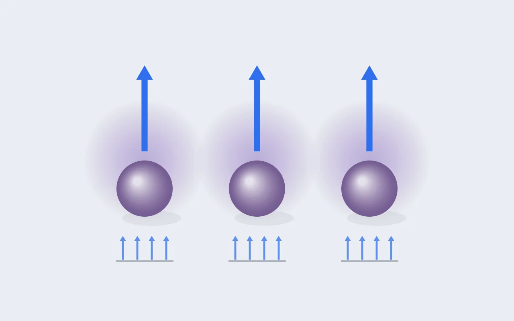

DFT 이론 [2] — 자기모멘트 12.0은 어떻게 Mn³⁺의 증명이 되는가
실습 [1]의 마지막 줄에는 mag = 11.9991이라는 숫자가 있었고, 저는 그걸 "망간이 +3가라는 증명"이라고 적었습니다. 이번 글은 왜 그렇게 말할 수 있는지에 대한 설명입니다. DFT에는 산화수라는 출력이 없는데, 자기모멘트 하나로 어떻게 산화 상태를 읽어 낼 수 있는지 다섯 단계로 따라가 보고, 이게 순환논법이 아닌 이유도 같이 적겠습니다.

1단계 · 전하 장부: 화학이 내놓는 가설
NaMnO₂가 전기적으로 중성이 되려면 전하의 합이 0이어야 합니다. 나트륨은 +1, 산소는 −2가 기본이니 (+1) + (Mn) + 2×(−2) = 0, 따라서 Mn = +3입니다. 고등학교 화학으로 끝나는 계산이지만, 이 시점에서는 아직 종이 위의 가설입니다. 양자역학 계산도 이 답을 내는지가 오늘의 질문입니다.
2단계 · 전자 세기: Mn³⁺는 d 전자 4개
중성 망간 원자의 전자 배치는 [Ar] 3d⁵ 4s²입니다. +3가가 되면서 전자 세 개를 내놓는데, 바깥의 4s 전자 둘이 먼저 나가고 3d에서 하나가 나갑니다. 그러면 d 전자 4개(d⁴)가 남습니다. 이 4라는 숫자가 마지막에 다시 나옵니다.
3단계 · 결정장: d 오비탈 다섯 칸이 3+2로 갈라진다
고립된 원자라면 d 오비탈 다섯 개의 에너지가 모두 같습니다. 그런데 결정 속 Mn은 산소 여섯 개에 둘러싸인 팔면체 자리에 있어서, 산소의 음전하 때문에 오비탈마다 에너지가 달라집니다. 산소를 피하는 방향으로 뻗은 세 개(t₂g)는 에너지가 낮아지고, 산소를 정면으로 향하는 두 개(e_g)는 높아집니다. 그 간격을 결정장 갈라짐 Δ라고 부릅니다.
4단계 · 줄다리기: 훈트 규칙 vs Δ
이제 d 전자 4개를 어디에 넣을지 정해야 합니다. 여기서 두 효과가 반대 방향으로 작용합니다. 훈트 규칙은 스핀을 나란히 펼치면 교환 에너지 이득이 있으니, 낮은 칸 세 개에 하나씩 채우고 네 번째는 높은 e_g 칸이라도 올라가 스핀을 펼치는 쪽(고스핀)을 선호하게 만듭니다. 반대로 결정장 Δ는 e_g가 비싸니 t₂g 안에서 짝을 짓는 쪽(저스핀)을 선호하게 만듭니다.
산화물의 Mn³⁺에서는 훈트 규칙 쪽이 이깁니다. 그래서 고스핀, 짝 없는 전자 4개입니다.
5단계 · 환율: 짝 없는 전자 1개 = 1 μB
계산이 알려 주는 자기모멘트는 본질적으로 (업스핀 전자 수 − 다운스핀 전자 수)입니다. 짝을 지은 전자는 서로 상쇄돼 0이고, 짝 없는 전자만 1 μB씩 기여합니다. 그러니 고스핀 Mn³⁺ 하나는 4 μB입니다. 셀에는 Mn이 3개 있고 Na와 O는 0이니, 셀 전체는 3 × 4 = 12 μB입니다. 로그의 11.9991과 맞습니다. 1단계의 종이 위 계산과 5단계의 양자역학 계산이 서로 다른 길로 같은 답에 도착한 겁니다.
"초기값에 4를 넣었으니 4가 나온 것 아닌가?"
여기서 입력에 답을 넣어 놓고 같은 답을 받은 게 아니냐는 반문이 나올 수 있고, 이 검증에서 가장 중요한 부분이 그 답입니다. 입력(MAGMOM)에 Mn당 4 μB를 넣긴 했습니다. 하지만 초기값은 출발점일 뿐입니다. SCF 루프는 스물세 번 도는 동안 전자밀도를 스스로 다시 맞추면서, 전자구조가 실제로 버틸 수 있는 상태로만 갑니다. Mn³⁺ 고스핀이 자기일관적으로 불안정했다면 모멘트는 반복 중에 다른 값으로 갔을 겁니다. 저스핀으로 바뀌어 6이 나오거나, 전하가 다시 배치돼 어중간한 값에서 멈추는 식으로요. 실제로 로그 중반(6~7번째 반복)에 에너지가 크게 흔들린 구간이 있었고, 그걸 지나 4.0에서 자리를 잡았습니다. 초기값은 출발점일 뿐이고, 수렴한 값이 결과입니다.
판결의 판별력, 반례표
망간이 다른 상태였다면 셀 전체 모멘트는 이렇게 나왔을 겁니다.
| 가설 | d 전자 | 짝 없는 스핀 | 셀 전체 (×3) |
|---|---|---|---|
| Mn²⁺ 고스핀 | d⁵ | 5 | 15 μB |
| Mn³⁺ 고스핀 | d⁴ | 4 | 12 μB ← 관측값 |
| Mn³⁺ 저스핀 | d⁴ | 2 | 6 μB |
| Mn⁴⁺ | d³ | 3 | 9 μB |
12라는 숫자는 이 표에서 딱 한 행만 가리킵니다. 후보들이 서로 3 μB씩 떨어져 있어서 헷갈릴 여지도 없습니다. 이 정도로 확실하게 갈리면 "증명"이라고 불러도 과장은 아니라고 생각합니다.
잔가지 둘, 11.9991의 0.0009는 어디로 갔나
정확히 12.0000이 아닌 건 망간의 d 전자가 이웃 산소와 아주 조금 공유결합(혼성)을 하면서 모멘트 일부가 산소 쪽으로 퍼지기 때문입니다. 0.001 수준이면 완전히 정상입니다. 그리고 제대로 하려면 셀 합계(12)만 볼 게 아니라, 출력 파일의 이온별 모멘트에서 Mn이 각각 ~4이고 O가 ~0인 것까지 확인해야 합니다. 입력에서 분해 출력 옵션(LORBIT)을 켜 둔 이유가 이것이었습니다.
이 도구가 연구에서 하는 일
여기까지는 검산 얘기고, 이 방법이 정말 쓸모 있는 건 이다음부터입니다. 배터리를 충전하면 Na가 빠지고, 전하를 맞추기 위해 Mn³⁺가 Mn⁴⁺로 산화됩니다. 계산에서는 이게 Mn별 모멘트가 4에서 3으로 떨어지는 것으로 보입니다. 그런데 어느 시점부터 Mn 모멘트는 더 안 떨어지고 산소에 0.3~0.7 μB가 생기기 시작하면, 전자를 내놓는 쪽이 금속에서 산소로 바뀌었다는 뜻이고 음이온 산화환원(anionic redox)이 일어나고 있다는 신호입니다. 제 연구 주제가 바로 이 부분(어떤 원자 배열이 산소까지 산화되게 만드는가)이고, 그 연구의 핵심 그림도 오늘 12.0을 읽은 방법 그대로 읽게 됩니다.
요약. 전하 합으로 Mn³⁺를 예상하고(1단계), Mn³⁺는 d 전자가 4개이며(2단계), 팔면체 결정장 안에서(3단계) 훈트 규칙 쪽이 이겨 고스핀이 되고(4단계), 짝 없는 스핀 4개 = 4 μB × Mn 3개 = 12 μB가 됩니다(5단계). 계산은 초기값이 아니라 스물세 번의 자기일관 반복 끝에 이 값에 자리를 잡았고, 다른 후보들(15, 9, 6)과 3 μB씩 떨어진 12는 Mn³⁺ 고스핀만 가리킵니다. 자기모멘트는 DFT에 없는 산화수를 읽어 내는 방법입니다.
확인 문제를 하나 남겨 둡니다. 충전을 흉내 내서 Na 하나를 뺀 Na₂Mn₃O₆를 계산하면 셀 전체 mag는 얼마가 나와야 할까요? 답은 위 표 안에 있습니다.

Seok
연구하면서 개발합니다. 배터리 재료를 원자 단위에서 계산하는 법을 바닥부터 배우는 중입니다. → 연구 · DFT 글 더 보기